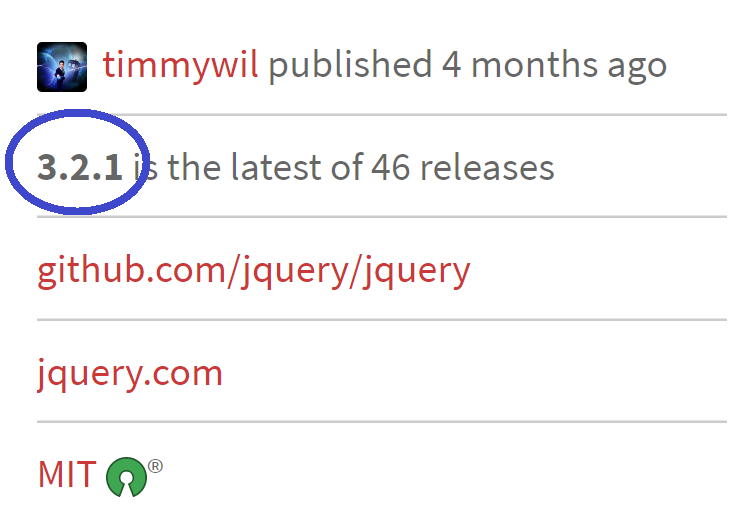
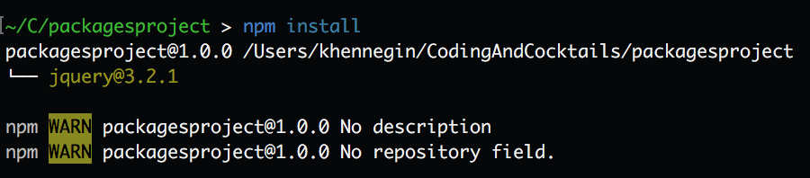

Part 7: Install a dependency via package.json directly
You can also add a dependency to the package.json directly. In this part, we'll add a dependency on jquery using this method.
In Atom, open the package.json file.
In Chrome, go to: https://www.npmjs.com/package/jquery
Notice the latest version of jQuery in the right sidebar:
In the dependencies section, add a comma at the end of the lodash line, hit enter and type the following on the new line. Then save again:
"jquery": "^3.2.1"For more information about the format of these versions (i.e. ^3.2.1), checkout npm documentation here: https://docs.npmjs.com/getting-started/semantic-versioning
On the command line, type:
npm installThis installs any dependencies listed in package.json, that haven't already been installed.